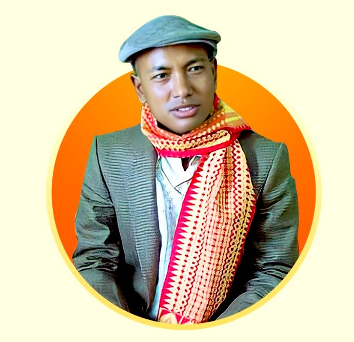

BODOFA UPENDRANATH BRAHMA
Brahma was born in Boragari village of Dotma, a small township at Kokrajhar district of Assam, India. He was a son of Mr. Monglaram Brahma and Ms. Lefsri Brahma. He was the fifth, and youngest, child. He was called "Thopen" during his childhood. He grew up in poverty.
From 1963, Brahma studied at various schools, including Dotma High School, Kokrajhar High School and, in 1973, at Sakti Ashram High and Vocational School under the guidance of Swamiji. In 1975, he passed the matriculation examination in the first division with letter marks in Mathematics. Thereafter he obtained a BSc with honours degree in Physics from Cotton College[citation needed] before enrolling at Gauhati University in 1981 for his MSc degree. Brahma also worked as a graduate science teacher at the Nehru Vocational High School in Gossainichina, and studied for a BA at Kokrajhar College during that period. He obtained his BA in 1985 and his MSc in 1986.
Brahma was elected as the President of the Goalpara District Students Union in 1978–79. He was vice-president of the All Bodo Students Union between 1981–1983 and president from 1986. Through this body he worked for the education and wellbeing of the community, which he believed to be losing its culture. Under his leadership, the ABSU agreed to include political issues as part of its agenda to give political matureness to the students.
Brahma died in Tata Memorial Cancer Hospital in Mumbai on 1 May 1990 as a consequence of blood cancer. His body was taken to Kokrajhar and then buried at Dotoma on 4 May. The ground where Brahma was buried is now known as "Thulungapuri".
The title of Bodofa (Guardian of Bodos) was posthumously conferred upon Brahma on 8 May 1990 in recognition of his vision and leadership. His life is celebrated each year on the anniversary of his death, which is now called Bodofa Day. A 21-foot-tall (6.4 m) bronze statue of him was unveiled in Kokrajhar on the tenth anniversary of his death.